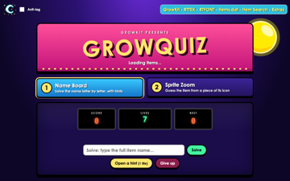
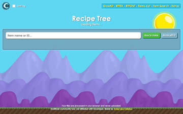
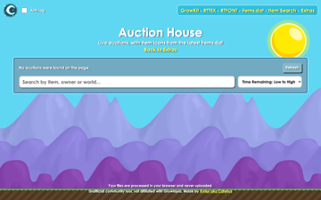
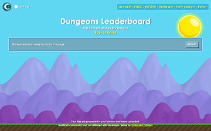
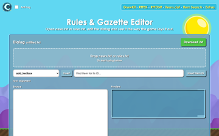
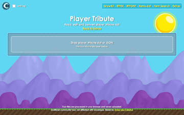
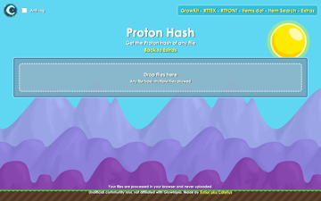
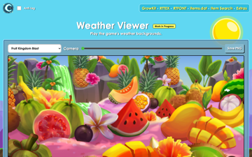

Extras
Smaller tools and live Growtopia lists.

GrowQuiz
An item game show: solve names letter by letter or guess from a sprite

Recipe Tree
See how any item is spliced, down to its base seeds

Auction House Work in Progress
Live auctions with item icons

Dungeons Leaderboard Work in Progress
Top scorers and every league

Rules & Gazette Editor
Edit news.txt and rules.txt with a game-style preview

Player Tribute
Read, edit and convert player_tribute.dat

Proton Hash
Get the Proton hash of any file

Weather Viewer Work in Progress
Play the game's weather backgrounds
Archive
Special Thanks
For the GrowTools project, which the items.dat tools here are built on.
For helping find old updates and cancelled content.
For the RTTEX converter and the archived items.dat files.
Robinson Technologies, the original developers of Growtopia.
And thanks to everyone who took part in or contributed to the archive.